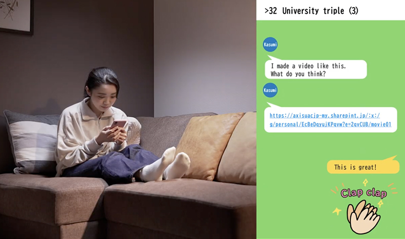
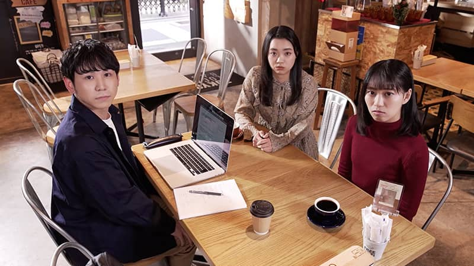
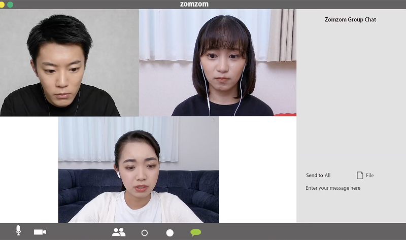
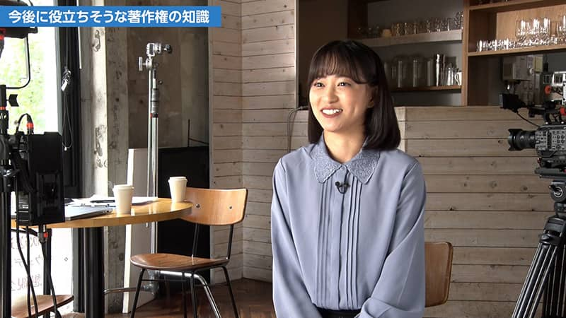

What is Copyright?
- Copyrighted Works
- Authors
- Fair Exploitation
- Protection of Authors' Rights
The three go to the professor to learn the difference between illegal downloads, such as movies, which are forbidden, and open source, which anyone can download.
The Right to Transmit Copyrighted Works to the Public
- Economic Rights
- Public Transmission Right
- Right of Making Transmittable
Naoya tries to post a video created by Kasumi on social media but is surprised when he hears that it violates the copyright. What rights does copyright include?
- 
Moral Rights Held by the Author
- Moral Rights
- Publication Right
- Attribution Right
- Integrity Right
- Acts Deemed to Constitute Infringement of Moral Rights
Aoi altered a video created by Kasumi without permission. Kasumi was not offended, but she was bothered by it. This may be because she felt the alternation denied her passion for the video.
- 
The Copyright Protection Term and How to Use Copyrighted Works
- Protection Term
- Limitations of Rights
- Permission to Use
Ryota was assigned to produce a video introducing the department on the open campus. While trying to understand the special treatment of copyright in the class, he organizes the rights of the materials given to him by Professor Uchida.
Special Rules Closely Related to School Education
- Article 35 of the Copyright Act
- Limitations of Rights
- Compensation for Public Transmission for Educational Purposes
Professors use or distribute materials in class or that students hand out during seminars, including copyrighted works created by others. We will consider how to use other people's works in educational situations and the rules.
Copyright Infringement on Social Media?
- Reproduction Right
- Public Transmission Right
- Social Media
- Penalty
- Offence Subject to Complaint
Aoi tries to upload Kasumi's character lunch box on social media. She learns that copyright is also involved in character lunch boxes.
Let's Read the Terms of Use
- Free Materials
- License
- Commercial Use
Aoi made a poster for the band club by using free materials. Kasumi is wondering if she can use the free materials freely....
Learning about Citations
- Published Work
- Master-Subject Relationship
- Indication of Sources
The three are working on a report. A senior who has seen the report is concerned about the "citation" method. What kind of problem is the citation?
Is It Plagiarism?
- Similarity
- Copyrightability
- Artistic Style
- Copyright Infringement
Aoi and Naoya find a post on social media that says the illustration on a city poster is plagiarism, but Kasumi is wondering.
Guilty? Compensation for Damages? When Copyright is Infringed
- Criminal Trial
- Criminal Penalty
- Offence Subject to Complaint
- Civil Trial
- Injunction
- Damages
- Moral Rights
- Restoration of Honor
Aoi and Kasumi asked Prof. Uchida how to respond to infringements, such as copyright infringement warnings and articles about damages at movie theaters.
Stage Events and Copyright
- JASRAC
- Non-Commercial
- Moral Rights
- E-sports
At a meeting of the school festival committee, a senior asked the three about copyright treatment for stage events. Is copyright clearance necessary even for an event at an educational institution with free admission?
How Much Similarity is Safe? School Festival Posters
- Permission to Use
- Direct Perception of Essential Characteristics
- Adaptation
The three are working on a poster for the school festival. Even if they cannot use the characters from the manga, can they make props and costumes?
Be Careful of Neighboring Rights! Uploading Videos of Music Events
- Neighboring Rights
- JASRAC
- YouTube
Kasumi and Aoi are trying to upload a video of the school festival to a video-sharing website. Is there any difference even though they use the same music in the band and dance clubs?
Is It Okay to Assign the Rights?
- Assignment of Rights
- Economic Rights
Naoya tries to enter a competition with his favorite kitten video. He seems to be dazzled by the prize money, but he has not checked the copyright of the selected video.
You Can Use My Work with These Conditions! Granting Licenses
- Permission to Use
- Creative Commons License
Aoi is trying to make her original illustrations available to the public. She learns about Creative Commons licenses and the benefits of terms of use for illustrations to be used as intended.
The Difficulty of Similarity
- Similarity
- Access
- Setting
- Idea
Naoya finds a work similar to that Kasumi has posted on a novel submission site, but Kasumi is puzzled and confused.
- 
Similar Rights to Copyright and But Different Rights: Intellectual Property Rights
- Intellectual Property Rights
- Automatic Protection System
- Patent Right
- Utility Model Right
- Breeder's Right
- Design Right
- Trademark Right
In addition to copyrights, there are other systems to protect what people have come up with. The topic of car design is an opportunity to learn about them.
Using Foreign Works
- Berne Convention
- Copyright Protection Term
- Wartime Extensions
Naoya and Kasumi want to use foreign lyrics on the website. They learn about the Berne Convention and wartime extentions from Prof. Uchida.
What are Derivative Works?
- Derivative Work
- Original Work
- Adaptation
Aoi's friend wants to make a novel from a manga that Aoi drew, and Aoi consults with Kasumi and Naoya. She thinks it's okay to use the manga, but she also wonders how the friend will use the novel and how it will be published.
What Should I Do If Copyrighted Work Appears in My Work?
- Incidentally Captured Use
- Incidentally Captured Works
Ryota filmed the working scene in the lab to make a video introducing the lab. While editing the video, he noticed that a poster in the lab was in the video. Is there any problem with posting the video as it is?
What Does "Reproduction for Private Use" Mean?
- Reproduction
- Reproduction for Private Use
The regular exams were coming up, so they decided to study together. Aoi said there was a part of a specialized subject she did not understand, so Naoya copied a part of a book from his home and gave it to her. Kasumi pointed out that it might be a copyright infringement.

AI Learns and AI Creates? Generative AI and Copyright
- Generative AI
- AI learning
- Similarity
- Access
The illustration Naoya created for the event using generative AI resembled an old CD cover. What should we do in such a case? How should we think about the relationship between the system by which the AI learns from existing images to create pictures and copyrights?
- 
Copyright from the Perspective of Actors (Interviews)
- Interview
- Creative Commons License
We interviewed the five lead actors about their experiences in performing in this video. We ask them about their knowledge of copyright that may be useful in the future, the publication of this material under a Creative Commons license, and various other thoughts related to copyright.
Recommendations and Messages from Actors
- Interview
- Recommendations
- Messages
We asked the five lead actors for their recommendations and messages on the videos.